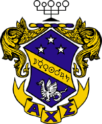
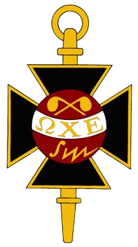
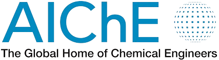
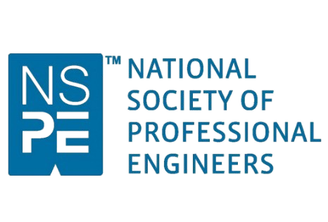
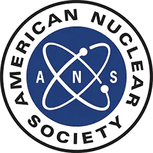
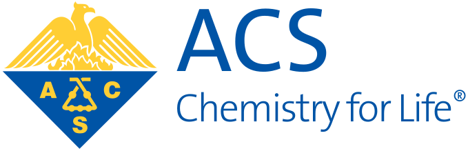
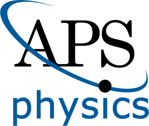

About Me
I am a senior pursuing a dual degree in Chemical Engineering and Physics, with minors in Nuclear Engineering and Mathematics. My academic training spans thermodynamics, transport phenomena, process design, semiconductor physics, and nuclear systems; equipping me to approach complex engineering problems from both a fundamental and applied perspective.
My research foundation was built through the MOLLER experiment at Jefferson Lab, where I have worked since January 2024 under Dr. Mark Pitt. This work involved designing and characterizing Small Angle Monitors, calibrating Photomultiplier tubes, and resolving complex noise and shielding challenges in our NIM-based readout chain which has sharpened the diagnostic intuition and experimental patience I want to bring into fusion research.
This past summer, I studied abroad at the Technical University of Denmark with Dr. Aaron Goldstein, conducting hands-on thermodynamic and transport experiments including rotary vacuum filtration, distillation, liquid–liquid extraction, fluidized-bed drying, and process control. I developed Python models to analyze transport behavior and quantify deviations from theory which has directly reinforced the modeling and experimental skills relevant to thermohydraulic research.
Following graduation, I plan to pursue a Ph.D. in Nuclear Engineering, focusing on heat transfer in plasma-facing components, two-phase flow and boiling, and reactor component design for next-generation devices.
Experience
Research
The MOLLER Experiment
January 2024 – PresentVirginia Tech Physics Department · Jefferson Lab, Newport News, VA
The Measurement of a Lepton-Lepton Electroweak Reaction (MOLLER) experiment aims to precisely measure the parity-violating asymmetry in electron-electron (Møller) scattering, providing a unique determination of the weak mixing angle at low energies and complementing searches at high-energy colliders like the LHC.
- Design, testing, and operation of Small Angle Monitors (SAMs) for ultra-precise false asymmetry monitoring.
- Photoelectron (PE) lightguide testing to ensure optimal light transmission and efficiency.
- Single PE calibrations (SPE) for accurate and consistent measurements.
- Characterization of Photomultiplier Tubes (PMTs) to meet stringent detector system requirements.
- Resolved a persistent noise problem in the NIM-based readout chain (attenuators, fan-in/fan-out, discriminators, digitizers) through systematic shielding and circuit diagnostics, eliminating detector instability entirely.
Work Experience
Chemistry Recitation Teaching Assistant
Jan – May 2024Virginia Tech College of Science · Blacksburg, VA
- Instructed and administered weekly quizzes to approximately 30 students.
- Skills: FERPA, Chemistry, Interpersonal Communication, Grading, Pedagogy.
Electrical Engineering Mentorship
Jan – Jun 2022MEI Engineering Inc · Harrisonburg, VA
- Worked with DataCAD, AutoCAD, and CAD for placement and design of circuits, lighting, fire equipment, and power transformers.
- Used Excel to calculate electrical load, air circulation, and square footage across projects.
- Participated in client conference calls to discuss project timelines and requirements.
Medical Lab Mentorship
Aug – Dec 2021Sentara RMH Medical Center · Harrisonburg, VA
- Oversaw operations across departments: Blood Bank, Hematology, Urinalysis, Chemistry, Microbiology, Semen Analysis, and Pathology.
- Assisted with quality control, maintenance, reagent reloading, and electrolyte replacement.
- Helped troubleshoot medical result errors and discrepancies.
Volunteer Work
Science Demos — Children's Museum
Jan 2024 – PresentChristiansburg, VA
- Showcased foundational chemistry concepts to young children as part of community STEM outreach.
Alpha Chi Sigma — Tutoring Committee Head
Sep 2023 – PresentBlacksburg, VA
- Coordinate weekly tutoring sessions in chemistry, physics, and mathematics for undergraduate students.
- Manage and mentor a team of volunteer tutors, matching students with academic support based on subject needs.
- Foster a collaborative learning environment promoting academic excellence and peer mentorship.
Alpha Chi Sigma — Professional Committee Head
Sep 2024 – PresentBlacksburg, VA
- Organize professional development events including industry speaker sessions, résumé workshops, and alumni networking panels.
- Develop partnerships with faculty, researchers, and industry professionals to expand members' career exposure.
- Lead initiatives preparing members for internships, research positions, graduate programs, and technical interviews.
Volunteer Summer Swim Coach
Jun 2019 – Jul 2023Spotswood Country Club · Harrisonburg, VA
- Mentored athletes on training habits, nutrition, and sportsmanship.
- Created engaging "Fun Friday" sessions featuring relays, games, and "Pool Jeopardy."
Volunteer Actor
Jun 2018 – Aug 2023Pleasant Valley Lutheran Church
- Led and supported performances with proceeds benefiting mission trips, hurricane relief, food drives, and academic scholarships.
Engineering Projects
A selection of research, simulation, and design projects spanning nuclear engineering, chemical process design, experimental physics, and embedded systems.
Conjugate Heat Transfer in a Tokamak First Wall
CFD simulation in ANSYS Fluent of cooling channel performance under MW/m² plasma heat fluxes in a tokamak-inspired 2D first wall geometry.
View Details →Production-Scale Enzyme Processing System Design
Automated control of a biochemical adsorption process for industrial-scale enzyme-based product formulations. ChE Senior Design — Novonesis.
View Details →Aspen Plus Reactor & Column Optimization
Designed an industrial process for synthesis and separation of acetonitrile, toluene, and benzene. Performed heat integration, economic optimization, and capital cost estimation.
View Details →Absorber Revamp & Heat-Integration
Redesigned a reboiled solvent absorber system, achieving a 29% reduction in annual operating cost through strategic heat-duty adjustments and exchanger reconfiguration.
View Details →Optical Pumping & Zeeman Spectroscopy
Performed optical pumping experiments on Rb-85 and Rb-87 to study hyperfine structure and Zeeman splitting using RF resonance techniques and Helmholtz coil field sweeps.
View Details →Hall Effect & Semiconductor Characterization
Conducted a full experimental investigation of the Hall Effect in n-type and p-type germanium using a lock-in amplifier, determining carrier density, mobility, and conductivity type.
View Details →Arduino Fruit Ripeness Detector
Developed an ethylene gas sensor-based automation system using Arduino, with threshold-based outputs validated through controlled experimental testing.
View Details →Electrical Circuit Heart Rate Monitor
Developed a heart rate monitoring system integrating physiological sensors, signal conditioning circuitry, and real-time digital display output.
View Details →Renewable Energy Windmill Design
Designed and fabricated a small-scale wind turbine using CAD modeling. Analyzed power output vs. wind speed using Python/MATLAB and compared against theoretical predictions.
View Details →Affiliations

Alpha Chi Sigma (ΑΧΣ)
Tutoring Committee Head · Professional Committee Head
Beta Psi Pledge Class · Sep 2023 – Present
Intramural Basketball: Power Forward

Omega Chi Epsilon (ΩΧΕ)
Vice President (Jan 2025 – Present) · Secretary (2024)
Chemical Engineering Honor Society · Dec 2023 – Present

American Institute of Chemical Engineers (AIChE)
Mentorship Program Participant
Sep 2022 – Present

National Society of Professional Engineers (NSPE)
Aug 2022 – Present

American Nuclear Society (ANS)
Aug 2022 – Present

American Chemical Society (ACS)
Aug 2022 – Present

American Physical Society (APS)
Jan 2023 – Present
Honors & Certifications
Honors
Certifications
Skills
Programming & Analysis
Python (NumPy, SciPy, Matplotlib), ROOT, MATLAB, Linux Bash
Modeling & Engineering Tools
Aspen Plus, SOLIDWORKS, Autodesk AutoCAD & Fusion 360, Mathematica
Instrumentation & DAQ
NIM modules, PMTs, scintillators, digitizers, oscilloscopes, detector calibration workflows
Software & Technical
LaTeX, HTML, CSS, JavaScript, Microsoft Office (Excel, Word, PowerPoint)
Systems & Laboratory
Electrical circuits, signal processing, semiconductor characterization, vacuum and radiation lab safety
References
Dr. Mark Pitt
Physics Department Chair & Professor, Virginia Tech
Research Advisor
Dr. Aaron Goldstein
Assistant Department Head for Undergraduate Studies & Associate Professor, Chemical Engineering
Study Abroad Program Professor; Heat Transfer Professor
Dr. Steven Wrenn
Chemical Engineering Department Head & Professor
ChE Seminar Professor; Mentor
Dr. Thomas O'Donnell
Associate Professor of Physics, Virginia Tech
Summer Physics REU Director; Intro Physics & Circuits Lab Professor
Daniel Valmassei
Ph.D. Student, Virginia Tech Physics Department
Direct Supervisor (MOLLER Experiment)
The MOLLER Experiment
Small Angle Monitor Diagnostics & PMT Characterization
The MOLLER experiment aims to measure the parity-violating asymmetry in Møller scattering with sub-percent precision, providing the most precise determination of the weak mixing angle at low momentum transfer of any planned experiment in the next decade. Any deviation from the Standard Model prediction would indicate new physics at TeV-scale energies.
Scientific Background
Parity-violating electron scattering is a precision electroweak probe. By measuring the helicity-dependent cross-section asymmetry in longitudinally polarized electron scattering off atomic electrons, MOLLER extracts the weak charge of the electron. The Small Angle Monitors (SAMs) provide sensitive monitoring of false (background) asymmetries — keeping these below the parts-per-billion level is critical to the experiment's success.
My Contributions
- PMT Characterization: Tested and characterized Hamamatsu R375 photomultiplier tubes operating with a custom collaboration-built base, requiring careful gain calibration and stability verification.
- Single Photoelectron (SPE) Calibrations: Performed SPE measurements to establish accurate detector gain and quantum efficiency benchmarks.
- Lightguide Testing: Evaluated optical lightguide coupling efficiency to ensure maximum light collection from scintillators to PMTs.
- Noise Mitigation: Identified and eliminated a persistent noise problem dominating the detector output through systematic shielding modifications and circuit isolation across the full NIM readout chain (attenuators, fan-in/fan-out, discriminators, digitizers).
Relevance to Fusion Research Goals
The diagnostic skills developed here — noise isolation in complex readout chains, PMT calibration under stringent stability requirements, and systematic troubleshooting — translate directly to high-heat-flux diagnostics and thermohydraulic instrumentation in fusion reactor research. Both contexts demand sub-noise-floor precision and methodical root-cause analysis.
Conference & Research Presentations
- Oct 2025The Physics and Astronomy Congress (PhysCon) — Denver, CO
- Oct 2025Southeastern Section of the APS (SESAPS) — James Madison University
- Apr 2025Virginia Tech Chemical Engineering Showcase
- Feb 2025Virginia Tech Chemical Engineering Seminar
- Dec 2024Virginia Tech Chemical Engineering Showcase
- Oct 2024APS Division of Nuclear Physics (DNP) — MIT
- Jul 2024Virginia Tech Summer Research Conference
- Jul 2024Virginia Tech Department of Physics Conference
Conjugate Heat Transfer in a Tokamak First Wall
CFD Simulation of First Wall Cooling Under Plasma Heat Flux
In a tokamak fusion reactor, the first wall is exposed to extremely high heat fluxes from the plasma — often exceeding 10–15 MW/m². This project models a simplified tokamak first wall cross-section in ANSYS Fluent to evaluate cooling channel performance, determine temperature distributions, and assess material safety limits under reactor-relevant conditions.
Physical Problem & Motivation
Reliable thermal management of plasma-facing components is one of the central engineering challenges in fusion reactor design. Poor heat removal leads to material erosion, structural cracking, plasma contamination, and reduced reactor availability. This project develops a validated CFD model to build intuition for the thermohydraulic behavior of first wall cooling systems — directly relevant to my graduate research goals.
Geometry & Domain
- Tungsten armor layer: t = 10 mm (plasma-facing surface)
- Copper alloy structural layer (CuCrZn): t = 25 mm
- Coolant: Water at 3 m/s, 100°C, 3 MPa
- Shield: Tungsten backing
- Plasma effect: Uniform surface heat flux (1–10 MW/m²)
Modeling Approach
- Software: ANSYS Fluent — pressure-based, steady-state solver
- Flow regime: Laminar baseline; turbulent extension (k-ε / k-ω) if conditions warrant
- Mesh: Structured mesh with wall-fluid interface refinement; mesh convergence study performed
- Convergence: All residuals ≤ 10⁻⁵ to 10⁻⁶
- Boundary conditions: Constant heat flux at plasma face, velocity inlet, outflow, no-slip walls, coupled thermal interface
Key Research Questions
- What is the temperature distribution throughout the wall and coolant at MW/m² heat fluxes?
- Does the maximum wall temperature remain within safe material limits for tungsten and CuCrZn?
- How does coolant velocity affect heat removal performance?
- How does cooling effectiveness degrade with increasing plasma heat flux?
- Which coolant provides superior thermal performance under identical operating conditions?
Team Responsibilities
Chun Li
Geometry creation in SpaceClaim, volume mesh generation, and ANSYS Fluent solver setup.
Jaden Minnick
Physical modeling, boundary condition specification, post-processing, results analysis, and final report.
Production-Scale Enzyme Processing System Design
Automated Control of Biochemical Adsorption Process
This project focuses on the design of an industrial-scale system to support a biochemical adsorption process used in enzyme-based product formulations. The work bridges laboratory-scale research and real-world manufacturing by developing a scalable, controlled process environment.
Project Overview
Many enzyme-based systems face challenges with stability and consistency during large-scale production. This project explores how controlled process conditions — particularly pH, temperature, and mixing — can be used to improve reliability in an adsorption-based formulation process. The goal is to design a system capable of maintaining these conditions at scale through automation and process integration.
Engineering Focus
- Development of a process flow design for a large-scale batch system
- Implementation of automated control strategies for key variables
- Integration of buffer preparation and dosing operations
- Consideration of mixing, heat transfer, and mass transfer effects
- Design for scalability, consistency, and operational reliability
System Features
- Controlled fluid delivery using metered pumping systems
- Real-time monitoring of process conditions (pH, temperature)
- Feedback control to maintain stable operating conditions
- Integration with existing industrial processing equipment
- Design considerations for cleaning, safety, and repeatability
Key Challenges
- Maintaining uniform conditions in large-volume systems
- Designing effective control strategies for sensitive biochemical processes
- Balancing process performance with industrial constraints
- Ensuring consistent operation across repeated production cycles
Deliverables
The project delivers a complete conceptual design for a controlled processing system, including process flow development, equipment selection and sizing considerations, a control strategy framework, and evaluation of economic and operational feasibility.
Skills Demonstrated
Process Design
Process design and systems thinking; scaling from lab to industrial systems
Transport Phenomena
Fundamentals of heat, mass, and fluid flow in biochemical contexts
Control & Automation
Process control and automation concepts; feedback loop design
Technical Communication
Engineering analysis and written/oral technical communication
Team Contribution
Worked as part of a multidisciplinary team to develop system design, analyze process requirements, and evaluate performance at scale.
Aspen Plus Reactor & Column Optimization
Industrial Process Design for Acetonitrile, Toluene & Benzene
Designed a full industrial process for the synthesis and separation of acetonitrile, toluene, and benzene using reactive and distillation unit operations in Aspen Plus, with a focus on heat integration and economic optimization.
Key Contributions
- Modeled reaction kinetics, heat and mass transfer behavior, and thermodynamic equilibria in Aspen Plus to determine optimal reactor configuration and operating conditions.
- Designed distillation columns, reboilers, condensers, and heat exchangers to purify products and manage recycle and waste streams.
- Performed cooling utility analysis using water and methyl ethyl ketone (MEK) to minimize cost while maintaining separation efficiency.
- Generated capital and operating cost estimates and optimized heat exchanger networks for plant-level decision making.
Tools & Methods
- Software: Aspen Plus
- Methods: Reaction kinetics modeling, thermodynamic equilibrium, heat and mass balance, TEA (techno-economic analysis)
- Deliverables: Process flow diagrams, column sizing, heat exchanger network design, cost estimation report
Absorber Revamp & Heat-Integration Optimization
29% Reduction in Annual Operating Cost Through Heat-Duty Optimization
Evaluated and redesigned a reboiled solvent absorber system to optimize ethane and propane separation efficiency while minimizing operating costs through strategic heat-duty adjustments and exchanger reconfiguration.
Key Contributions
- Simulated baseline and modified reboiler and side-exchanger heat duties to improve separation performance.
- Investigated side-exchanger removal and reconfiguration, identifying an optimal two-cooler design.
- Achieved a 29% reduction in annual operating cost without additional capital investment.
- Justified design decisions through quantitative simulation results and thermodynamic reasoning.
Tools & Methods
- Software: Aspen Plus
- Methods: Heat integration analysis, sensitivity studies, cost-benefit evaluation
Optical Pumping & Zeeman Spectroscopy of Rubidium
Hyperfine Structure and Zeeman Splitting in Rb-85 and Rb-87
Performed optical pumping experiments on rubidium vapor to study hyperfine structure and Zeeman splitting using circularly polarized light and RF resonance techniques.
Key Contributions
- Aligned optical components to generate right-hand circularly polarized pumping light for isotope-selective pumping.
- Operated Helmholtz coils to tune magnetic fields and performed field sweeps to observe resonant depumping transitions.
- Applied RF fields to probe Zeeman level spacings and measured resonance frequencies versus magnetic field strength.
- Analyzed absorption traces to identify isotopic responses and quantify hyperfine splitting behavior in both Rb-85 and Rb-87.
Instrumentation
- Rubidium vapor cell, optical polarizers, quarter-wave plate
- Helmholtz coil system, RF signal generator
- Photodetector and oscilloscope for absorption trace acquisition
Hall Effect & Semiconductor Characterization
Carrier Density, Mobility, and Conductivity Type in Germanium
Conducted a full experimental investigation of the Hall Effect in n-type and p-type germanium to determine carrier concentration, mobility, and conductivity type using precision measurement techniques.
Key Contributions
- Operated an electromagnet, precision current source, and SR830 lock-in amplifier to extract microvolt-scale Hall voltages.
- Performed four-point longitudinal and transverse measurements to isolate the Hall response from magnetoresistance contributions.
- Determined carrier density and mobility from linear Hall resistance trends across varying magnetic field strengths.
- Interpreted results using semiconductor band structure and charge transport theory to confirm n-type and p-type behavior.
Instrumentation
- Electromagnet with variable field supply
- SR830 lock-in amplifier, precision current source
- n-type and p-type germanium samples with four-point probe geometry
Arduino-Based Fruit Ripeness Detector
Ethylene Gas Sensor Automation for Ripeness Detection
Developed a sensor-based automation system using Arduino to detect fruit ripeness by monitoring ethylene gas concentration, with threshold-based output triggering and experimental validation.
Key Contributions
- Programmed Arduino microcontroller to process gas sensor analog inputs and trigger threshold-based digital outputs.
- Assembled and calibrated hardware components including MQ-series gas sensor, LED indicators, and buzzer outputs.
- Validated system accuracy through controlled experimental testing across multiple fruit types and ripeness stages.
- Documented sensor response curves and threshold calibration methodology.
Tools & Technologies
- Microcontroller: Arduino Uno
- Sensors: MQ-series ethylene/gas sensor
- Programming: Arduino C/C++
Renewable Energy Windmill Design
Small-Scale Wind Turbine Fabrication and Performance Analysis
Designed and constructed a small-scale wind turbine to evaluate aerodynamic efficiency and renewable energy generation under controlled wind conditions, with quantitative power output analysis.
Key Contributions
- Designed and fabricated turbine blades using CAD modeling and iterative prototyping to optimize aerodynamic geometry.
- Measured electrical power output at varying wind speeds using a connected generator and multimeter.
- Used Python and MATLAB to calculate generated power, plot efficiency curves, and compare results to theoretical predictions based on Betz's Law.
- Analyzed mechanical-to-electrical conversion losses and proposed design improvements.
Tools & Technologies
- CAD: Autodesk Fusion 360
- Analysis: Python, MATLAB
- Hardware: Small DC generator, anemometer, fabricated blade assembly
Electrical Circuit Heart Rate Monitor
Sensor-Based Pulse Detection with Real-Time Signal Display
Developed an electrical circuit-based heart rate monitoring system integrating physiological sensors, analog signal conditioning, and real-time digital output display.
Key Contributions
- Designed and constructed analog signal conditioning circuitry including amplification and filtering stages to isolate the pulse waveform from noise.
- Integrated a photoplethysmography (PPG) sensor for non-invasive pulse detection.
- Implemented a digital display output to show real-time heart rate in beats per minute.
- Tested and validated circuit performance across multiple subjects and measurement conditions.
Tools & Technologies
- Components: Op-amps, capacitors, resistors, PPG sensor
- Equipment: Oscilloscope, function generator, breadboard prototyping
- Display: 7-segment digital display